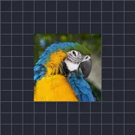

Draaien

Draait de laag met een constante snelheid rond; onder nul draait hij de andere kant op.
Draaien laat een laag rond en rond draaien met RPM omwentelingen per minuut. 60 is één omwenteling per seconde; met een negatief getal draait hij de andere kant op. Handig voor laadwieltjes, ventilatoren en platen.
Instellingen
| Instelling | Type | Bereik | Standaard |
|---|---|---|---|
| RPM | Getal | -3600 tot 3600 | 60 |
| Stijl | Keuze | Klassiek, Standaard | Klassiek |